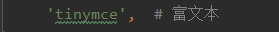
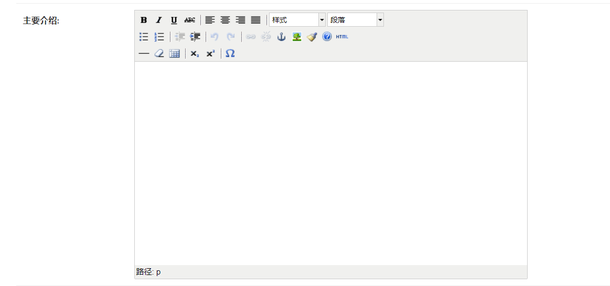
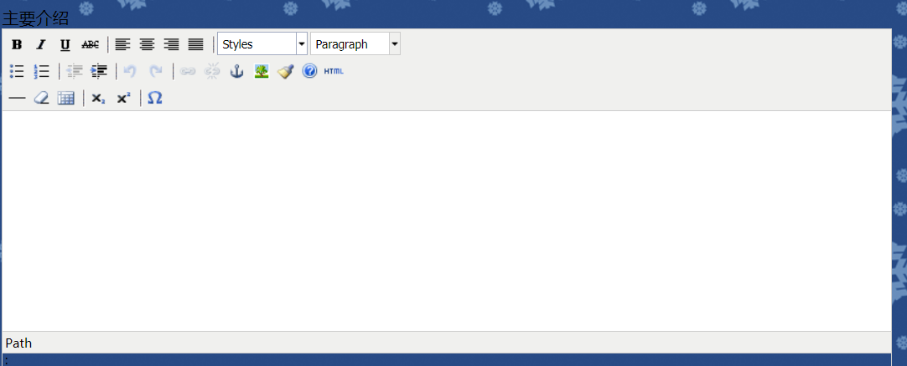

原文出处:本文由博客园博主小喵钓鱼提供。
原文连接:https://www.cnblogs.com/xmdykf/p/11406235.html
原文连接:https://www.cnblogs.com/xmdykf/p/11406235.html
Tinymce富文本 前台和后台的使用
一，后台 Admin
1. 于 settings.py 文件中修改 INSTALLED_APPS

2. 于 settings.py 文件中增添如下配置


1 # 富文本配置
2 TINYMCE_DEFAULT_CONFIG = {
3 'theme': 'advanced',
4 'width': 600,
5 'height': 400,
6 }3. 于 工程目录下的urls.py文件中增添如下路径
1 re_path('^tinymce/', include(('tinymce.urls', 'tinymce'), namespace='tinymce')), # 富文本4. 于 App目录下的 admin.py文件 中 进行如下操作
1 from tinymce.models import HTMLField
2
3 # 某一模型中的介绍文本输入
4 content = HTMLField(verbose_name="主要介绍")5. 大公完成

二，前台 Templates
1. 于 父模板 或 所在模板中增添
1 <script src="{% static 'tiny_mce/tiny_mce.js'%}"></script>
2 <script>
3 tinyMCE.init({
4 'mode':'textareas',
5 'theme': 'advanced',
6 'width': 850,
7 'height': 300,
8 })
9 </script>
2. 下面所以的 textareas 就显示为 富文本 样式了
1 <div> <label for="content">主要介绍</label> <textarea name="content" id="content" cols="30" rows="10"></textarea></div>
补充：注意点
有的 教程 说要 从 下载的 python 环境中 找到 tiny_mce.js 或 tiny_mce_src.js 放到 静态目录下再引用，但是很大几率不对，显示不出来
django 自带的 富文本 直接引用 /static/tiny_mce/tiny_mce.js 即可，不用管是否自己创建的静态目录下是否能看见的说